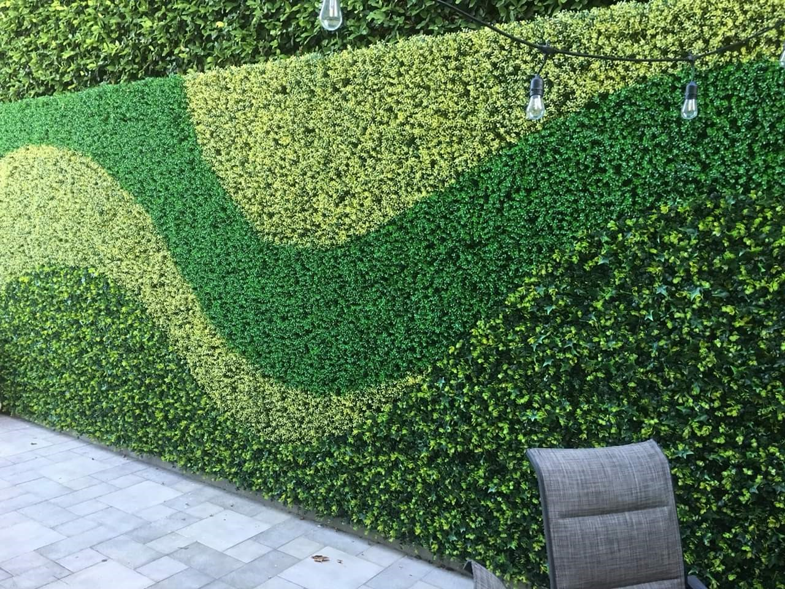

Follaje Artificial

Plantas y muros verdes artificiales para decoración interior y exterior.
Especificaciones técnicas
- Material: Polietileno y polipropileno
- Uso recomendado: Decoración de interiores, eventos, oficinas
- Altura: Variable según modelo
- Aplicaciones: Muros verdes, centros comerciales, hogares
Beneficios
- Sin mantenimiento
- Resistente a los rayos UV
- Larga duración
Proyectos donde se ha usado
Decoración de oficinas en Tuxtla, centros comerciales, hoteles.